Refining Plots
Data Visualization, Week 6
Kieran Healy, Duke University
Outline for Today
- Housekeeping
- Building up plots, again
- ggplot themes
- Writing a small helper function
- Custom plots and layouts
How to Navigate these Slides
- When you view them online, notice the compass in the bottom right corner
- You can go left or right, or sometimes down to more detail.
- Hit the
Escapekey to get an overview of all the slides. On a phone or tablet, pinch to get the slide overview. - You can use the arrow keys (or swipe up and down) in this view, as well.
- Hit
Escapeagain to return to the slide you were looking at. - On a phone or tablet, tap the slide you want.
Building up Plots, Again
library(ggplot2)
library(scales)
library(MASS)
library(stringr)
library(splines)
theme_set(theme_gray())
ASA Membership & Revenue data
- On Github: ASA Sections
- Or manually:
asa.url <- "https://raw.githubusercontent.com/kjhealy/asa-sections/master/data/asa-section-membership.csv"
asa.data <- read.csv((url(asa.url)), header = TRUE)
## If you cloned the github repository, launch R in it and then
## asa.data <- read.csv("data/asa-section-membership.csv", header=TRUE)
dim(asa.data)
## [1] 52 18
head(asa.data)
## Section Sname X2005 X2006 X2007
## 1 Aging and the Life Course (018) Aging 598 603 614
## 2 Alcohol, Drugs and Tobacco (030) Alcohol/Drugs 301 304 303
## 3 Altruism and Social Solidarity (047) Altruism NA NA NA
## 4 Animals and Society (042) Animals 209 208 218
## 5 Asia/Asian America (024) Asia 365 379 398
## 6 Body and Embodiment (048) Body NA NA NA
## X2008 X2009 X2010 X2011 X2012 X2013 X2014 X2015 Beginning Revenues
## 1 606 624 605 612 620 610 580 612 12752 12104
## 2 288 255 213 226 200 195 173 171 11933 1144
## 3 NA 139 216 320 305 306 318 307 1139 1862
## 4 176 180 167 172 149 160 154 141 473 820
## 5 368 405 351 377 337 349 336 313 9056 2116
## 6 NA 302 295 307 306 309 312 321 3408 1618
## Expenses Ending Journal
## 1 12007 12849 No
## 2 400 12677 No
## 3 1875 1126 No
## 4 1116 177 No
## 5 1710 9462 No
## 6 1920 3106 No
Quick & Dirty Function for custom colors
my.colors <- function (palette = "cb") {
cb.palette <- c("#999999", "#E69F00", "#56B4E9", "#009E73",
"#F0E442", "#0072B2", "#D55E00", "#CC79A7")
rcb.palette <- rev(cb.palette)
bly.palette <- c("#E69F00", "#0072B2", "#999999", "#56B4E9",
"#009E73", "#F0E442", "#D55E00", "#CC79A7")
if (palette == "cb")
return(cb.palette)
else if (palette == "rcb")
return(rcb.palette)
else if (palette == "bly")
return(bly.palette)
else stop("Choose cb, rcb, or bly ony.")
}
Make sure the figures/ directory is available
ifelse(!dir.exists(file.path("figures")),
dir.create(file.path("figures")),
FALSE)
## [1] FALSE
Starting with the basics again
p <- ggplot(asa.data, aes(x=X2014, y=Revenues, label=Sname))
p0 <- p + geom_point()
print(p0)
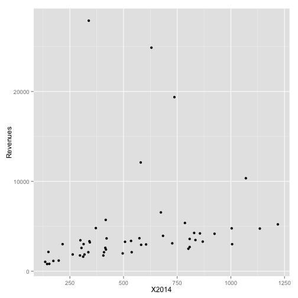
Add a smoother
p <- ggplot(asa.data, aes(x=X2014, y=Revenues, label=Sname))
p0 <- p + geom_smooth() +
geom_point()
print(p0)
## geom_smooth: method="auto" and size of largest group is <1000, so using loess. Use 'method = x' to change the smoothing method.
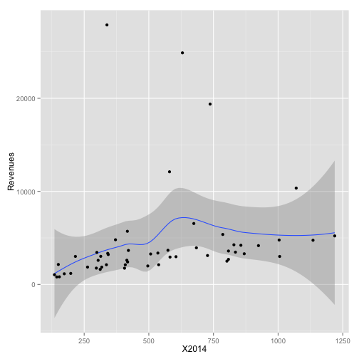
Pick out some outliers
p <- ggplot(asa.data, aes(x=X2014, y=Revenues, label=Sname))
p0 <- p + geom_smooth() +
geom_point() +
geom_text(data=subset(asa.data, Revenues > 7000))
print(p0)
## geom_smooth: method="auto" and size of largest group is <1000, so using loess. Use 'method = x' to change the smoothing method.
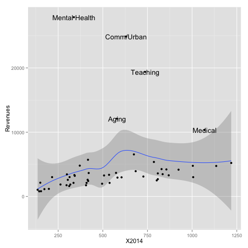
Introduce a third variable
p <- ggplot(asa.data, aes(x=X2014, y=Revenues, label=Sname))
p0 <- p + geom_smooth() +
geom_point(aes(color = Journal)) +
geom_text(data=subset(asa.data, Revenues > 7000))
print(p0)
## geom_smooth: method="auto" and size of largest group is <1000, so using loess. Use 'method = x' to change the smoothing method.
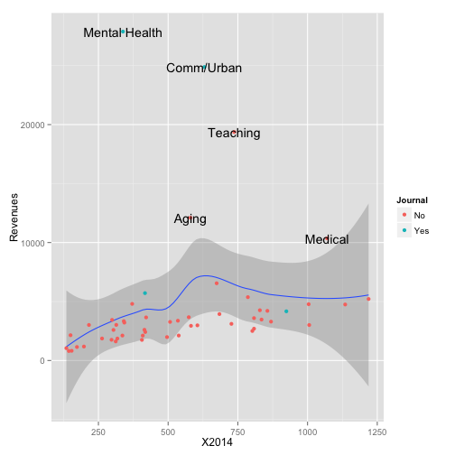
Change the fitted line
p <- ggplot(asa.data, aes(x=X2014, y=Revenues, label=Sname))
p0 <- p + geom_smooth(method = "lm",
se = FALSE,
color = "gray80") +
geom_point(aes(color = Journal)) +
geom_text(data=subset(asa.data, Revenues > 7000))
print(p0)
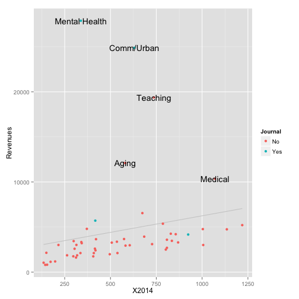
Tidy up the labeled text
p <- ggplot(asa.data, aes(x=X2014, y=Revenues, label=Sname))
p0 <- p + geom_smooth(method = "lm",
se = FALSE,
color = "gray80") +
geom_point(aes(color = Journal)) +
geom_text(data=subset(asa.data, Revenues > 7000),
size = 2,
aes(x=X2014+10,
hjust = 0,
lineheight = 0.7))
print(p0)
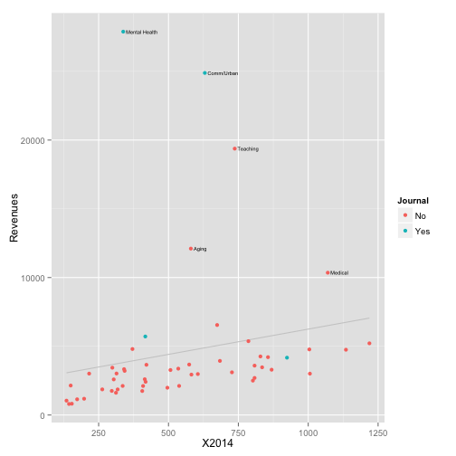
Label the Axes and Scales
p <- ggplot(asa.data, aes(x=X2014, y=Revenues, label=Sname))
p0 <- p + geom_smooth(method = "lm",
se = FALSE,
color = "gray80") +
geom_point(aes(color = Journal)) +
geom_text(data=subset(asa.data, Revenues > 7000),
size = 2,
aes(x=X2014+10,
hjust = 0,
lineheight = 0.7)) +
labs(x="Membership",
y="Revenues",
color = "Section has own Journal")
print(p0)

Fix Tick Marks and Colors
p <- ggplot(asa.data, aes(x=X2014, y=Revenues, label=Sname))
p0 <- p + geom_smooth(method = "lm",
se = FALSE,
color = "gray80") +
geom_point(aes(color = Journal)) +
geom_text(data=subset(asa.data, Revenues > 7000),
size = 2,
aes(x=X2014+10,
hjust = 0,
lineheight = 0.7)) +
scale_y_continuous(labels = dollar) +
scale_color_manual(values = my.colors("bly")) +
labs(x="Membership",
y="Revenues",
color = "Section has own Journal")
print(p0)

Add a title and move the legend
p <- ggplot(asa.data, aes(x=X2014, y=Revenues, label=Sname))
p0 <- p + geom_smooth(method = "lm",
se = FALSE,
color = "gray80") +
geom_point(aes(color = Journal)) +
geom_text(data=subset(asa.data, Revenues > 7000),
size = 2,
aes(x=X2014+10,
hjust = 0,
lineheight = 0.7)) +
scale_y_continuous(labels = dollar) +
scale_color_manual(values = my.colors("bly")) +
labs(x="Membership",
y="Revenues",
color = "Section has own Journal") +
theme(legend.position = "bottom") +
ggtitle("ASA Sections, Membership vs Revenues")
print(p0)

Change the theme
theme_set(theme_minimal())
print(p0)
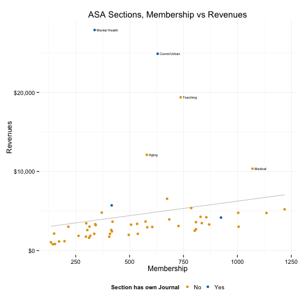
Change the theme
theme_set(theme_light())
print(p0)
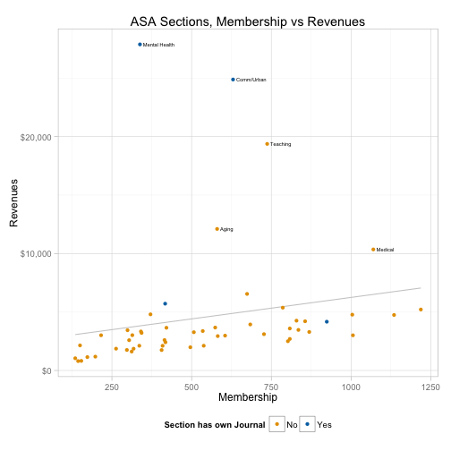
Moar themes
library(ggthemes)
theme_set(theme_fivethirtyeight())
## Warning: New theme missing the following elements: panel.margin.x,
## panel.margin.y
print(p0)
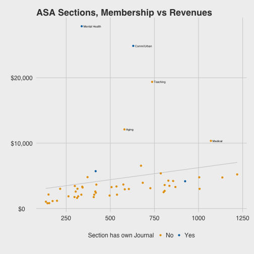
Moar themes
theme_set(theme_economist())
## Warning: New theme missing the following elements: legend.box,
## panel.margin.x, panel.margin.y
print(p0)

Moar themes
theme_set(theme_wsj())
## Warning: New theme missing the following elements: panel.margin.x,
## panel.margin.y
print(p0)

If you must
theme_set(theme_stata())
## Warning: New theme missing the following elements: panel.margin.x,
## panel.margin.y
print(p0)

Membership trends over time
library(tidyr)
library(dplyr)
yrs <- colnames(asa.data) %in% paste("X", 2005:2015, sep="")
data.m <- subset(asa.data, select = c("Sname", colnames(asa.data)[yrs]))
data.m <- gather(data.m, Year, Members, X2005:X2015)
data.m$Year <- as.integer(str_replace(data.m$Year, "X", ""))
Membership trends over time
trend.tab <- data.m %>% group_by(Year) %>%
mutate(yr.tot = sum(Members, na.rm=TRUE)) %>%
group_by(Sname) %>%
na.omit() %>%
mutate(Ave = mean(Members, na.rm=TRUE),
Dif = Members - Ave,
Pct.All = round((Members/yr.tot*100), 2),
Age = length(Members)) %>%
group_by(Sname) %>%
mutate(Index = (Members / first(Members, order_by = Year))*100,
AveInd = mean(Index))
Membership trends over time
index.labs <- trend.tab %>%
filter(Year == 2015) %>%
ungroup() %>%
filter(min_rank(desc(Index)) < 12 | min_rank(desc(Index)) > 44)
index.low <- trend.tab %>%
filter(Year == 2015) %>%
ungroup() %>%
filter(min_rank(Index) < 12)
index.high <- trend.tab %>%
filter(Year == 2015) %>%
ungroup() %>%
filter(min_rank(desc(Index)) < 12)
ind.all <- trend.tab$Sname %in% index.labs$Sname
ind.low <- trend.tab$Sname %in% index.low$Sname
ind.high <- trend.tab$Sname %in% index.high$Sname
trend.tab$Track.all <- ind.all
trend.tab$Track.low <- ind.low
trend.tab$Track.high <- ind.high
library(quantreg)
p <- ggplot(subset(trend.tab, Age==11 & AveInd < 105),
aes(x=Year, y=Index, group=Sname, color = Track.low))
p0 <- p + geom_smooth(method = "rqss", formula = y ~ qss(x), se = FALSE) +
geom_hline(yintercept = 100) +
geom_text(data=subset(index.low, Age==11 & AveInd < 105),
aes(x=Year+0.2, y=Index+rnorm(1, sd=0.8),
label=Sname,
lineheight=0.8),
hjust = 0,
color = "black",
size = 2.9) +
expand_limits(x = c(2005:2016)) +
scale_color_manual(values = my.colors("bly")[c(3, 1)]) +
scale_x_continuous(breaks = c(seq(2005, 2015, 3))) +
guides(color = FALSE) +
ggtitle("Declining Sections. 2005 = 100")
print(p0)
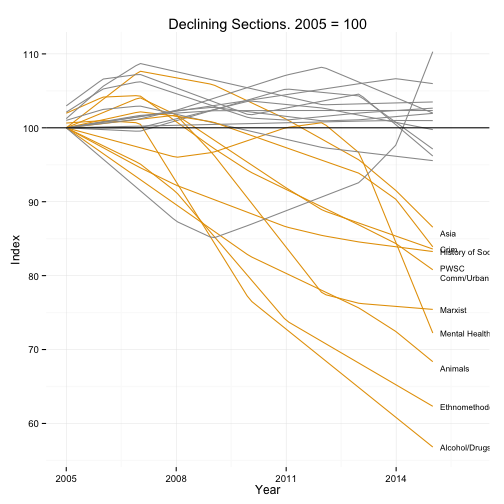
Simple functions help you out
plot.section <- function(section="Culture", x = "Year",
y = "Members", data = trend.tab,
smooth=FALSE){
require(ggplot2)
require(splines)
## Note use of aes_string() rather than aes()
p <- ggplot(subset(data, Sname==section),
aes_string(x=x, y=y))
if(smooth == TRUE) {
p0 <- p + geom_smooth(color = my.colors("bly")[2],
size = 1.2, method = "lm",
formula = y ~ ns(x, 3)) +
scale_x_continuous(breaks = c(seq(2005, 2015, 4))) +
ggtitle(section)
} else {
p0 <- p + geom_line(color=my.colors("bly")[2], size=1.2) +
scale_x_continuous(breaks = c(seq(2005, 2015, 4))) +
ggtitle(section)
}
print(p0)
}
plot.section()

plot.section("Rationality")

plot.section("OOW")

plot.section("Sexualities", smooth = TRUE)

Note how this function could be made progressively more general
- E.g. calculate breaks from the data
- Allow
geom_smooth()arguments to be passed through
plot.section2 <- function(section="Culture", x = "Year",
y = "Members", data = trend.tab,
smooth=FALSE, ...){
require(ggplot2)
require(splines)
## Note use of aes_string() rather than aes()
p <- ggplot(subset(data, Sname==section),
aes_string(x=x, y=y))
if(smooth == TRUE) {
p0 <- p + geom_smooth(color = my.colors("bly")[2],
size = 1.2, ...) +
scale_x_continuous(breaks = c(seq(2005, 2015, 4))) +
ggtitle(section)
} else {
p0 <- p + geom_line(color=my.colors("bly")[2], size=1.2) +
scale_x_continuous(breaks = c(seq(2005, 2015, 4))) +
ggtitle(section)
}
print(p0)
}
plot.section2("Comm/Urban", smooth = TRUE, method = "loess")

plot.section2("Children", smooth = TRUE, method = "lm", formula = y ~ ns(x, 2))
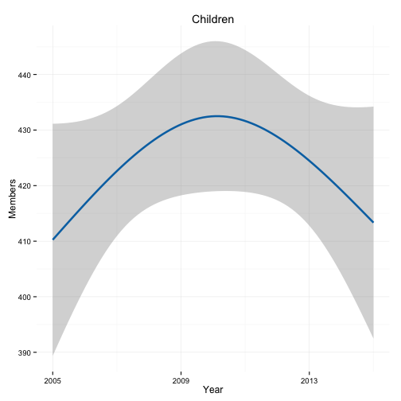
Another Example: Apple Sales Data
git clone https://github.com/kjhealy/apple
apple.url <- "https://raw.githubusercontent.com/kjhealy/apple/master/data/apple-all-products-quarterly-sales.csv"
apple.data <- read.csv((url(apple.url)), header = TRUE)
## If you cloned the github repository, launch R in it and then
## asa.data <- read.csv("data/asa-section-membership.csv", header=TRUE)
dim(apple.data)
## [1] 67 6
head(apple.data)
## Time Period iPhone iPad iPod Mac
## 1 Q4/98 1 NA NA NA 0.944
## 2 Q1/99 2 NA NA NA 0.827
## 3 Q2/99 3 NA NA NA 0.905
## 4 Q3/99 4 NA NA NA 0.772
## 5 Q4/99 5 NA NA NA 1.377
## 6 Q1/00 6 NA NA NA 1.043
library(dplyr)
library(ggplot2)
library(tidyr)
library(splines)
library(scales)
library(grid)
## data <- read.csv("data/apple-all-products-quarterly-sales.csv",
## header=TRUE)
apple.data$Date <- seq(as.Date("1998/12/31"), as.Date("2015/7/2"), by = "quarter")
apple.data.m <- gather(apple.data, Product, Sales, iPhone:Mac)
head(apple.data.m)
## Time Period Date Product Sales
## 1 Q4/98 1 1998-12-31 iPhone NA
## 2 Q1/99 2 1999-03-31 iPhone NA
## 3 Q2/99 3 1999-07-01 iPhone NA
## 4 Q3/99 4 1999-10-01 iPhone NA
## 5 Q4/99 5 1999-12-31 iPhone NA
## 6 Q1/00 6 2000-03-31 iPhone NA
p <- ggplot(subset(apple.data.m, Product!="iPod" & Period>30),
aes(x=Date, y=Sales, color=Product, fill=Product))
p0 <- p + geom_point(size=1.3) +
geom_smooth(size=0.8, se=FALSE, method = "loess") +
theme(legend.position="top") +
scale_x_date(labels = date_format("%Y"),
breaks=date_breaks("year")) +
scale_colour_manual(values=my.colors()) +
scale_fill_manual(values=my.colors()) +
labs(x="", y="Sales (millions)")
print(p0)
## Warning: Removed 4 rows containing missing values (stat_smooth).
## Warning: Removed 16 rows containing missing values (stat_smooth).
## Warning: Removed 20 rows containing missing values (geom_point).

### Convert to time series objects
ipad <- apple.data.m %>%
group_by(Product) %>%
filter(Product=="iPad") %>%
na.omit() %>%
data.frame(.)
ipad.ts <- ts(ipad$Sales, start=c(2010, 2), frequency = 4)
iphone <- apple.data.m %>%
group_by(Product) %>%
filter(Product=="iPhone") %>%
na.omit() %>%
data.frame(.)
iphone.ts <- ts(iphone$Sales, start=c(2007, 2), frequency = 4)
mac <- apple.data.m %>%
group_by(Product) %>%
filter(Product=="Mac") %>%
na.omit() %>%
data.frame(.)
mac.ts <- ts(mac$Sales, start=c(1998, 4), frequency = 4)
## Loess decomposition
iphone.stl <- stl(iphone.ts, s.window = "periodic", t.jump = 1)
plot(iphone.stl)

Redraw the STL plot with GGplot
iphone.stl2 <- stl(iphone.ts, s.window = 11, t.jump = 1)
ggiphone.stl <- data.frame(iphone.stl2$time.series)
ggiphone.stl$sales <- apple.data$iPhone %>% na.omit()
ind <- is.na(apple.data$iPhone)
ggiphone.stl$Date <- apple.data$Date[!ind]
ggiphone.stl$Product <- "iPhone"
Redraw the STL plot with GGplot
p <- ggplot(ggiphone.stl, aes(x=Date, y=sales))
p1 <- p + geom_line() + ylab("Data")
p <- ggplot(ggiphone.stl, aes(x=Date, y=trend))
p2 <- p + geom_line() + ylab("Trend")
p <- ggplot(ggiphone.stl, aes(x=Date, y=seasonal))
p3 <- p + geom_line() + ylab("Seasonal")
p <- ggplot(ggiphone.stl, aes(x=Date, y=remainder))
p4 <- p + geom_bar(stat="identity", position="dodge") + ylab("Remainder")
p <- ggplot(ggiphone.stl, aes(x=Date, y=(seasonal/trend)*100))
p5 <- p + geom_line(stat="identity", position="dodge") + ylab("Seasonal/\nTrend (pct)")
Redraw the STL plot with GGplot
grid.newpage()
vplayout <- function(x, y) viewport(layout.pos.row = x, layout.pos.col = y)
pushViewport(viewport(layout = grid.layout(5, 1)))
print(p1, vp = vplayout(1, 1))
print(p2, vp = vplayout(2, 1))
print(p3, vp = vplayout(3, 1))
print(p4, vp = vplayout(4, 1))
print(p5, vp = vplayout(5, 1))
## ymax not defined: adjusting position using y instead